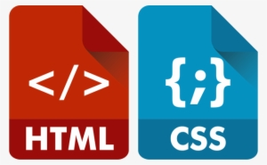

About Me

I am a former teacher and Instructional Design student at Quinnipiac University.
I have created this website using HTML and CSS
for my final project. I also volunteer at a nonprofit, homeless support organization for youth ages 18 to 24
in my community.
Over the past 3 years as a volunteer, I have learned that for most homeless youth,
gaining reliable and dependable employment is crucial, and that it is not
possible to obtain housing security without this steady income. Homeless youth
are often employed, but at places where workers are frequently sent home and do
not provide consistency of hours needed to gain regular income or benefits. Also,
for young adults who are parents, steady employment also provides the ability to
care for their children.
Since most jobs require at least some math skills, potential employers usually
require candidates to complete a mental math test as part of the application
process. Therefore, many of our disadvantaged youth request additional help
from their mentors so that they can complete these pre-employment exams
successfully, opening doors to more steady and reliable income.
About This Site

The goal of this website is to help young adults overcome the hurdle of gaining steady
employment by boosting mental math skills which are needed to successfully apply for,
and be considered for most regular employment opportunities.
By using well-researched learning design principles combined with adult learning theory,
content and lessons specifically target the adult audience. This is a much needed resource
since most apps that teach mental math skills are geared towards elementary aged children
and teens.
Research shows that adults respond best to learning that is specifically geared to them.
Adult learning apps should be multi-media-based, intuitively designed, contain relevance,
be immediately applicable and also needs to be learner-directed. Finally, unlike mentors,
websites are available 24/7 and responsive.
(Responsive means sites can be viewed on various devices)